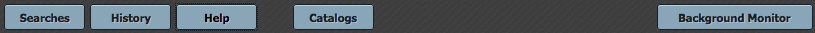

Basic Features and Functions in the IRSA/WISE Image Service
This page is an overview of the basic features and functions of the
IRSA/WISE Image Service; for an even faster overview, see the Quick-Start Guide. Most of this file
follows the blue tabs across the top of the Image Service.

Besides the online help (also available as a pdf), there are also WISE
Image Service video tutorials, available at the IRSA YouTube channel. There is a playlist that
collects together all of the WISE videos. Also see the set of
"micro-tutorials" relevant for more than one archive.
Contents of page/chapter:
+Terminology
+Searches -- The basics of searching
+History -- Your search history
+Help -- Getting more help
+Catalogs -- Retrieving and using catalogs
+Background Monitor -- Downloading data and
catalogs in the background
Terminology
WISE obtained images at wavelengths of 3.4, 4.6, 12, and 22 microns
(also referred to as W1, W2, W3, and W4, respectively) with spatial
resolution ranging from 6 arcseconds at the shortest wavelength to 12
arcseconds at the longest.
Individual exposure (Level 1b) WISE images are assembled into Atlas
(Level 3) tiles 1.564 degrees on a side. The WISE image server does
not re-mosaic these tiles. The degree of overlap between tiles is a
function of ecliptic latitude. You can obtain all Atlas tiles on which your
object appears, or individual exposures. Atlas tiles have point source
profiles whose full width at half max (FWHM) is sqrt(2) times larger
than the native (single-exposure) values. (See Explanatory Supplement
for more details.) Also note that WISE images are in DN, not in
absolute flux units.
Various sets of WISE images and corresponding catalog data are
available for download, and exactly what is available is a function of
the release. Please consult the corresponding Explanatory Supplement
for information on the data set you choose to use.
Search results are displayed in your browser in several sub-windows,
sometimes referred to as "panes", like "window panes."
Searches -- The basics of searching
Searching the image archive is straightforward, and a variety of
options are available by default (and can be retrieved after a search
via clicking on the "Searches" blue tab at top left). The position
search is the most commonly used search option, and the default upon
first loading this tool. You may enter target names, which will be
automatically resolved into coordinates using NED or Simbad.
Alternatively, you may enter coordinates directly. These coordinates
can be in decimal degrees or in hh:mm:ss dd:mm:ss format. By default,
it assumes you are working in J2000 coordinates; you can also specify
galactic, ecliptic, or B1950 coordinates as follows:
- '46.53, -0.251 gal' means 46.53, -0.251 degrees in galactic coordinates
- '12.7, +4.3 ecl' means 12.7, +4.3 degrees in ecliptic coordinates
- '19h17m 11d58m b1950' means 19h17m 11d58m in B1950 coordinates
Examples are given below the text entry box before you start typing in
the box.
As you are completing a valid coordinate entry, it echoes back to you
what it thinks you are entering. Look right below the box in which you
are typing the coordinates to see it dynamically change.
A Multi-Object search option
using a user-supplied input table is also available.
You need to specify which image set to search: AllWISE (everything
summed up), All-Sky (4-band, Full Cryo), 3-Band Cryo, NEOWISE
Post-Cryo (2-band), or NEOWISE Reactivation (2-band). You also need to
select the desired Data Product Level (single exposure images, coadded
Atlas images, or both; note that some releases consist of only
exposures or only Atlas images). If you want more frames than just the
most centered result of your search, be sure to set "Return only the
most centered image containing the target" to no. (If you select all
the image sets, and leave "most centered" as 'yes', then you will only
get the image set that is most centered, not the most centered per
set which may not be what you want.) There are many more search
options, described in detail on the page on
searching.
A list of the search results appears in a table in the top right pane
of the search results window. These include basic information about
all the WISE images which fulfill your search criteria. Note that
there will be a separate table entry for each WISE band, so the total
number of images in the table will (generally) be four times the
number of WISE framesets or coadds available for the queried region.
Different tabs here correspond to different products selected for the
search, Atlas or single exposures. Catalogs will also appear as
additional tabs here in this window pane, after you search for them.
An indication of each image's footprint on the sky can be found in the
upper left window pane, with red polygons on top of an IRAS 100 um
image. Selecting different rows in the search results pane changes
what is highlighted in blue on the upper left left footprint tab.
Other tabs in this window provide a multi-color WISE image of your
selected region, and details about the image corresponding to the
highlighted row in the results pane.
Along the bottom of the search results window in the image display
plane are the WISE images corresponding to the search results selected
in the upper right. If a single position search was used, this
position will be highlighted by a blue circle in the center of the
field of view. The actual FITS images are shown; for more on how to
interact with them, see the Visualization
section.
You may wish to impose additional filters on your search results; see
the section on filtering search
results for more information.
History -- Your search history
The History menu option (blue tab at the top of the window, next to
"Searches") gives you access to your own search history.
All of the single-position searches that you perform during a given
session with the WISE archive are remembered in the search history
panel. A high-level summary of the search is also listed -- what kind
of search you performed and which parameters you used.
You can resubmit the search (see buttons at top left of the search
history window), remove the search from your history, or save the
search as a favorite search to which you can return at a later
time/date. However, in order to return to it during a different
session, you do need to be logged in when you save the search -- see
the user registration section.
Note that batch searches are not retained, even if you log in and
attempt to save them.
Help -- Getting more help
The "Help" blue tab leads you into this online help. You can also
download a PDF version of this manual; look at the top of the help
window for the "View PDF" link.
More information on WISE can be found at
https://irsa.ipac.caltech.edu/Missions/wise.html.
Please consult the extensive corresponding Explanatory Supplement for
the data set you choose to use. A grid with a brief description of the
data releases and links to the Explanatory Supplements is available at
the beginning of the Overview chapter.
Have a question? Please read the frequently asked questions (FAQs) first.
The IRSA
YouTube channel has several tutorials that are relevant to WISE --
see the WISE playlist as well as the set of "micro-tutorials" relevant
for more than one archive.
Found a bug?
If you think you have found a bug, before reporting it, please check
the list of known bugs and issues and read the
online help. It may be a "feature" we already know about. If you have
found a new, real bug then please do let us know by contacting the
IRSA Help Desk. Please include your operating system version and
your browser software and version.
Catalogs -- Retrieving and using catalogs
(Note that catalogs are available via a blue tab that appears at the
top of the page only after you have performed at least one search --
in essence, you need to have something on which to overlay the catalog
before it will let you search.)
You can choose from any of a wide variety of catalogs to load and
overlay on your visualized data.
They can be catalogs from
IRSA, your own catalogs from
disk, or catalogs from
the VO. You can also make plots
from the catalogs.
For more on catalogs, see the Catalogs
section.
Background Monitor -- Downloading
data and catalogs in the background
The Background Monitor appears as a blue tab (or button) in the upper
right of your window to keep track of the data downloads you have
requested. It actively changes to reflect what it is doing
("Preparing", etc., e.g.,:  ) Data
packaging all goes to the Background Monitor; larger catalog requests
are also sent to the Background Monitor.
) Data
packaging all goes to the Background Monitor; larger catalog requests
are also sent to the Background Monitor.
A pop-up window can be called up at any time by clicking the
"Background Monitor" tab. You can watch your catalog being retrieved.
It will update that window when the data are available for download
and overlay on your image, providing a link for obtaining the data. It
also keeps track of the downloads you have requested during the same
session, and indicates with a checkmark those that you have already
loaded. Remove them from the list by clicking on the blue 'x'.

To stop any query mid-way through, click on the little red octagon
("stop sign") that appears next to the query in the Background Monitor
pop-up.
If you forgot to put in your email at the beginning, or if the
packaging is taking longer than you expected, you can click on "Add
email" from the lower right of the Background Monitor popup and add
your email during the packaging process.
- Downloading data
- After deciding which data to download, click the checkboxes to
select specific data files to download (click the checkbox at the top of
the column of checkboxes to 'select all'), and then click "Prepare
Download" to begin the packaging and downloading process. A pop-up
window will appear in order to define exactly what kinds of data you
would like to have packaged up. Clicking "Prepare Download" in the
pop-up initializes this packaging process.
After you click "Prepare Download", the packaging process moves to
the Background Monitor. The background monitor can be called up by
simply clicking on the blue tab. You can watch your data being
packaged, and when the data are available for download, it will update
that panel, providing a link for downloading the packaged data. Your
most recent download request appears on the top of the list.
Note that you control where the data are saved on your disk
through your browser; your browser may be configured to store all
downloads in a particular location on your disk. Look for a
"Downloads" folder or search for recently modified files.
- Downloading catalogs
- The Background Monitor will also keep track of catalog downloads
for you. The monitor will dynamically update to reflect its status,
and will let you know when the catalog is ready to download or
display. Open the background monitor and click on the catalog name to
load it into a tab of its own. For more on catalogs, see the Catalog section.